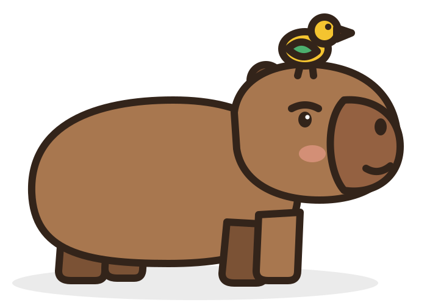
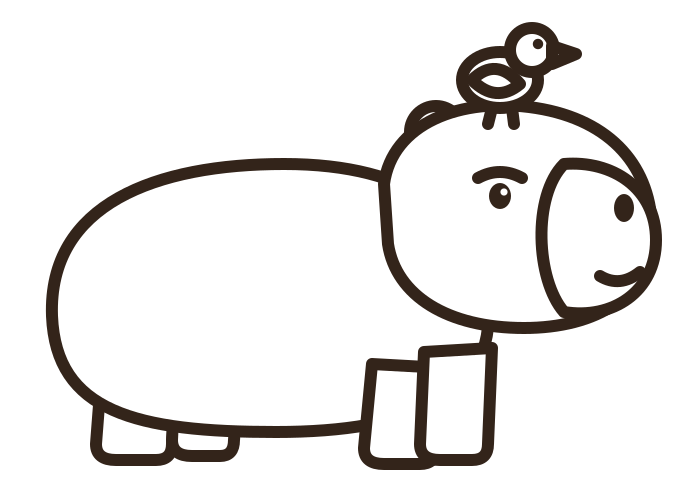
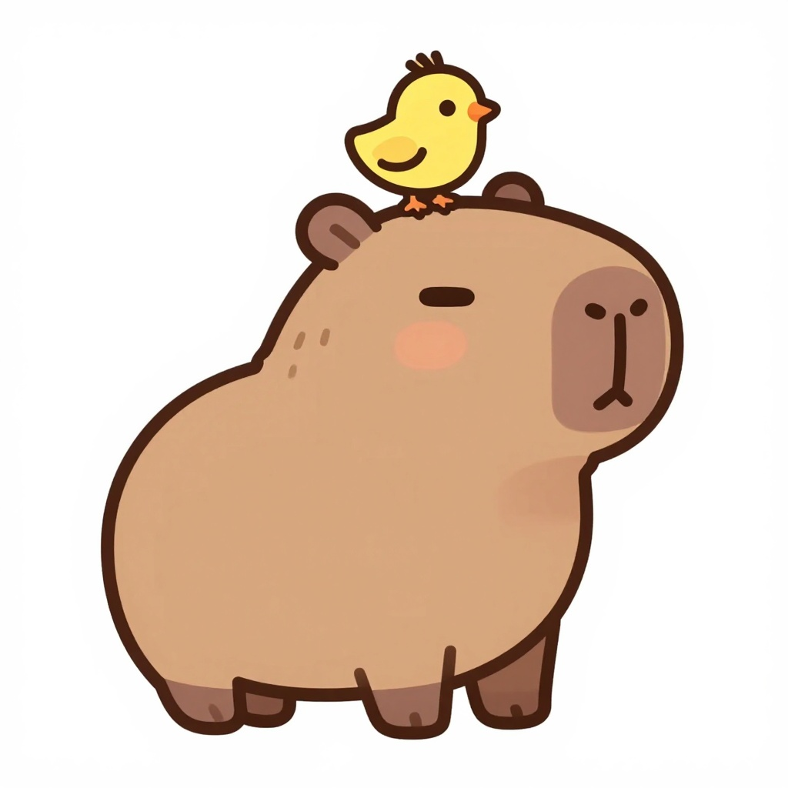
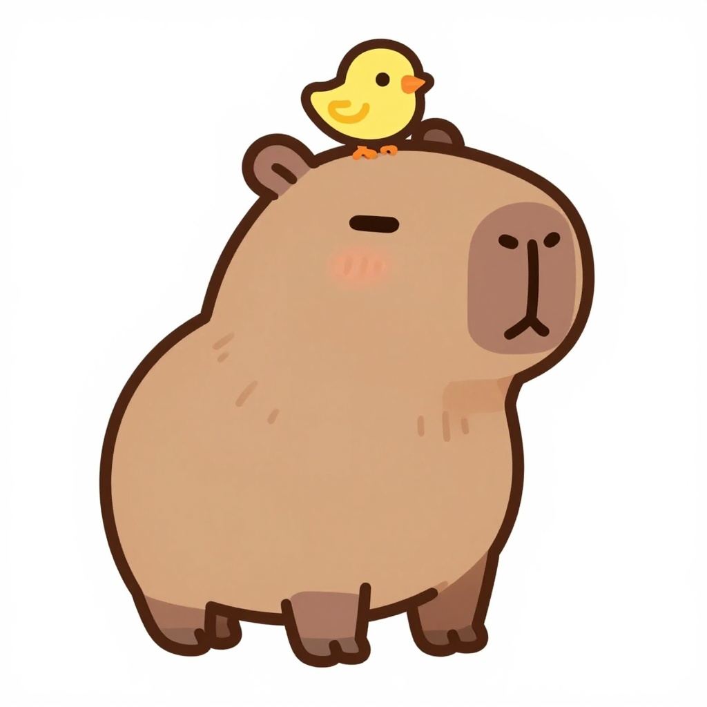
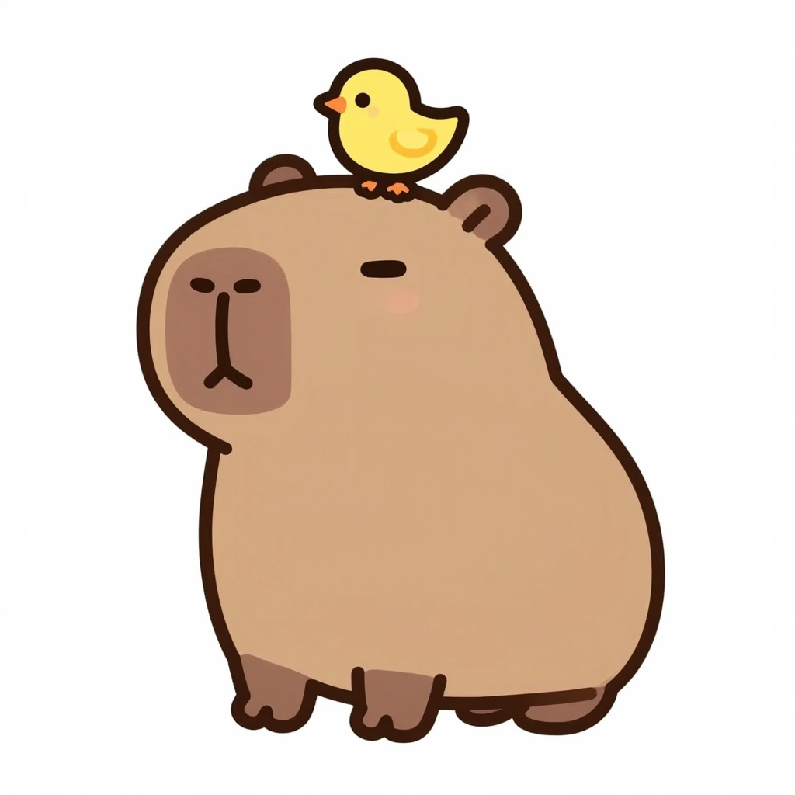
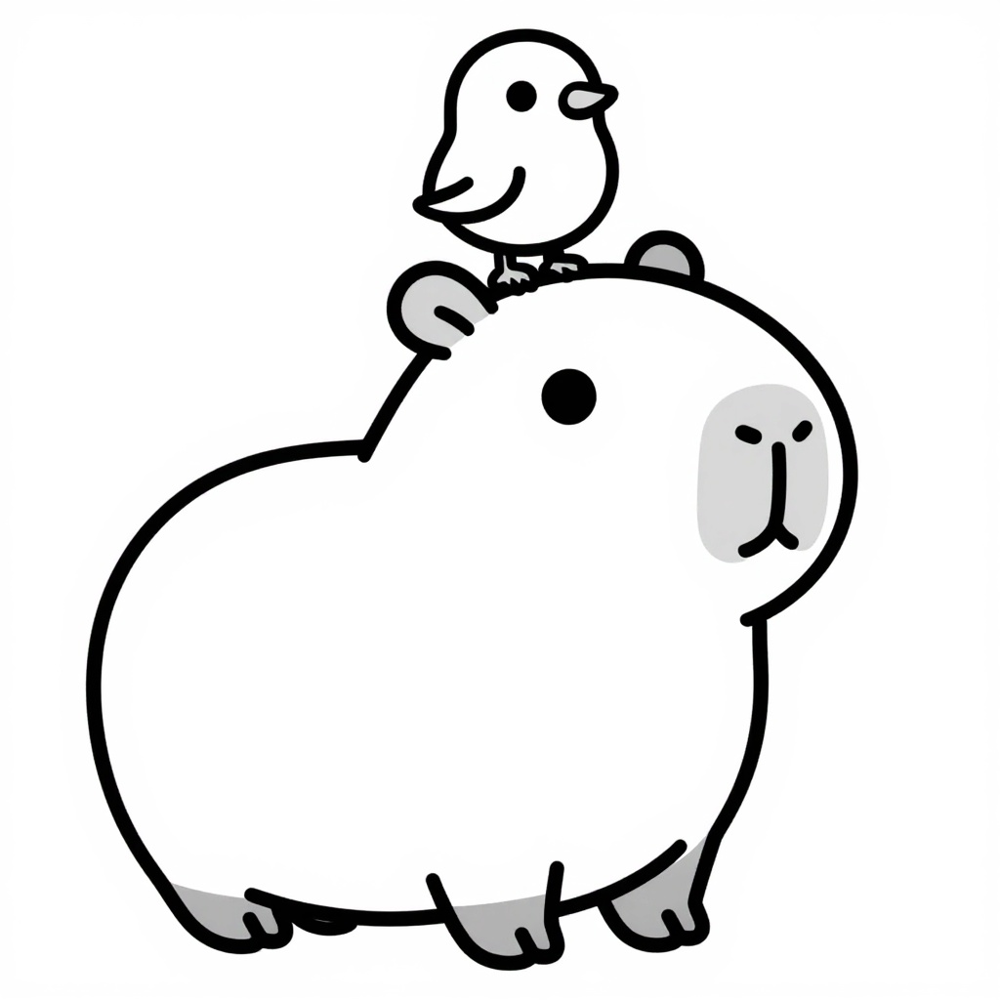
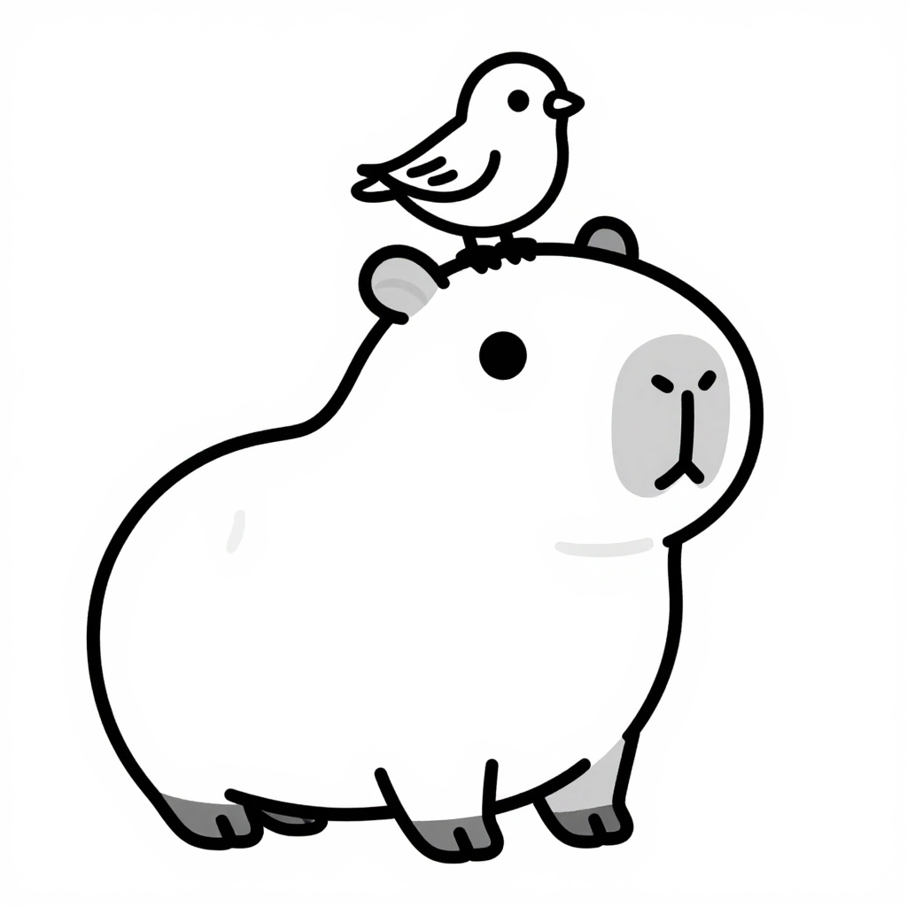

Same character in two methods. A is hand-coded vector (SVG): one drawing gives both the colour and the printable version, and it never changes. B is AI (Z-Image Turbo, on your laptop): cuter, but every generation differs a little, and the line art is a different drawing.






